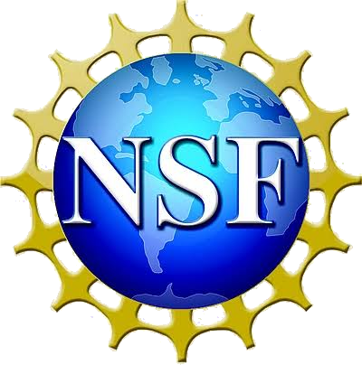
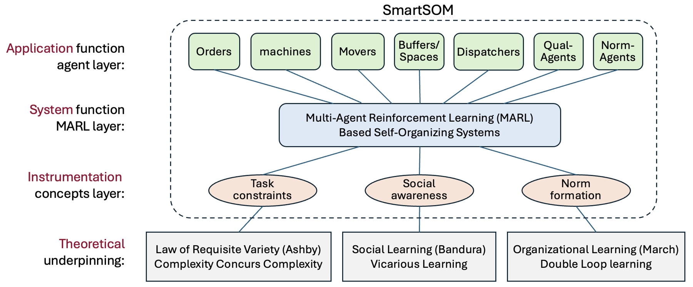

Research & Projects
SmartSOM — Self-Organizing Manufacturing System Design
NSF award: “SmartSOM: Self-Organizing Manufacturing with Task Constraints and Social-Organizational Learning”
- Sponsor
- National Science Foundation (NSF), Manufacturing Systems Integration (MSI) program
- Duration
- 3 years, starting September 2026
- Collaboration
- Collaborative research with the IMPACT Lab at the University of Southern California (USC), led by Prof. Yan Jin (lead PI). Dr. Bingling Huang is the PI at Cal State Fullerton and leads the work in the Design-is-ALL Lab.

Background
Modern products, from personalized prosthetics to on-demand electronics, are increasingly customized. Yet most factories still rely on rigid, centralized control that is hard to adapt when orders change, machines fail, or demand shifts. In a self-organizing manufacturing (SOM) system, machines, robots, and other resources coordinate among themselves, so the system can adapt without a central planner. For that to work in a real factory, the agents must respect real task constraints, such as product recipes, processing order, and limited resources, while still learning to work well as a team.
Goal
SmartSOM aims to make manufacturing systems that can self-organize, self-configure, self-heal, and self-optimize. These systems should stay robust, efficient, and scalable under changing product recipes, uncertain demand, and mixed types of resources. The project grounds this goal in three theories: the Law of Requisite Variety (Ashby), social learning (Bandura), and organizational learning (March).
Research tasks
- Agent-based system model. Represent orders, machines, movers, buffers and spaces, dispatchers, quality agents, and norm agents as learning agents within one multi-agent reinforcement learning (MARL) framework.
- Task constraints. Build product recipes and resource constraints into how agents learn, so that self-organized behavior stays feasible and matches the complexity of the tasks.
- Social awareness. Develop social learning and coordination mechanisms that let agents learn from one another’s behavior, as well as from their own experience.
- Norm formation. Use organizational, double-loop learning so that teams develop shared norms and roles, and can revise them when conditions change.
- Physical validation. Implement and validate the methods on a physical multi-robot manufacturing testbed in the Design-is-ALL Lab at CSUF.

TrustAI — Building Trust in Human-AI Robotics Teaming
As AI becomes integral to manufacturing and logistics, effective human-AI teaming is essential to the future of industry. Trust is a key factor in successful human-AI collaboration, yet it remains difficult to model and quantify. This project builds simulated human-AI collaboration environments and investigates how trust can be modeled, measured, and designed into human-robot teams for manufacturing tasks. The goal is to translate “trust” — an abstract human factor — into concrete engineering principles for reliable human-AI robotic systems. Built in NVIDIA Isaac Sim and Isaac Lab.

Physics-Informed RL for Fluid Dynamics
Fish-inspired autonomous underwater vehicle (AUV) swarms operate amid unsteady vortex dynamics, nonlinear fluid–body interactions, and limited sensing. Rather than hand-coding fluid laws into rules, this project uses experimentally grounded multi-agent reinforcement learning to study how AUV swarms learn to perceive, adapt to, and exploit surrounding fluid dynamics — improving navigation efficiency, coordination, and energy use.

Physics-Constrained Denoising for Plasma Simulation
Statistical noise obscures the physics in fully kinetic plasma simulations, which are costly to run at high fidelity, and traditional denoising must be hand-tuned and can distort the physics. This project develops a physics-constrained deep-learning denoising framework that treats particle-in-cell data as image- and video-like fields, using modern computer-vision architectures to reconstruct high-fidelity results from fast, low-cost, noisy simulations while preserving physical consistency.

Social Learning in Self-Organized Systems
This project investigates how autonomous agents learn socially — sharing knowledge and coordinating in complex multi-agent tasks. Instead of fixed rules or isolated learning, a social-learning framework lets agents learn from both environmental feedback and the behavior of other agents, differentiating roles and developing shared norms without centralized control. Validated on cooperative assembly and object-manipulation tasks, it improves learning efficiency and performance as complexity and team size grow, while mapping the trade-offs among social information, computational cost, and scalability.